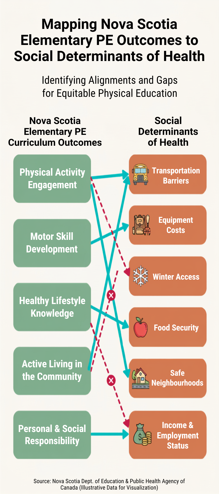

Week 1 Reflection: Policy Gaps and the Reality of Teaching PE in the CBRM
The readings this week made me think more about something I see in my own teaching: how much responsibility we place on individuals to be healthy without always looking at what makes healthy choices possible in the first place. Hancock (2011) points out that Canada hasn't actually shifted resources into prevention, despite all the talk about health promotion. Much of the focus remains on treating illness rather than preventing it. Raphael et al. (2020) make a similar point about how health is often understood mainly through personal choices such as diet and exercise, without enough attention to the conditions people are living in.
As a PE teacher here in Cape Breton, I see some of these challenges in my own school community. PE can teach movement skills and encourage students to be active, but that doesn't mean every student has the same opportunity to be active outside of school. Many families are dealing with real financial strain. Kids show up in shoes that are falling apart. Families can't always afford gym clothes or water bottles. In winter, when we want to take classes outside, not every student has proper winter gear. When we organize school sports like soccer, games happen right after school in communities that are far away with no bus service, so families can't always get their kids there.
Our breakfast and lunch programs are one example of how the school can help address some of these barriers. Knowing that students can get something to eat at school matters, especially when families are under financial pressure. It also makes me question how effective standard health-promotion messaging can be when students don't have the same resources or opportunities outside of school.
The video transcript also introduced Eisner's idea of the null curriculum. What stood out to me was that what schools leave out can matter just as much as what they formally teach. In PE and health, we can spend a lot of time talking about being active and making healthy choices without giving much attention to whether students have the resources to follow through on those messages. When we talk about healthy living without recognizing people's financial situations, we can make it sound like being unable to make healthy choices is simply a personal failing.
Telling students what they should do is only part of health promotion. There also needs to be time, funding, and real support to address the barriers families are facing. Even something as simple as organizing a sports activity or an opportunity outside school can involve transportation, equipment, scheduling, and whether families are able to get there. Teachers are already doing a lot, so this kind of work needs support beyond the classroom.
I created a Canva graphic this week that maps out our provincial PE outcomes alongside the social determinants of health. I wanted to look more closely at where the curriculum connects with real health factors and where there may be gaps between what we teach and the realities students experience in our school community.
Weekly Artifact

Figure 1. Visual mapping of Nova Scotia Elementary PE Curriculum outcomes against key social determinants of health.
References
Cameron, E., McGowan, E., & Memorial University of Newfoundland. (2015). Unit 1 video transcript [Video transcript]. Brightspace.
Hancock, T. (2011). Health promotion in Canada: 25 years of unfulfilled promise. Health Promotion International, 26(suppl 2), ii263–ii267.
Raphael, D., Bryant, T., Mikkonen, J., & Raphael, A. (2020). Social determinants of health: The Canadian facts (2nd ed.). York University. https://thecanadianfacts.org/The_Canadian_Facts-2nd_ed.pdf